Курс «Введение в индийскую философию» · Обзорная лекция
Введение в индийскую философию
Лектор: Сергей Владимирович Пахомов
Вступление. Литература по индийской философии YT/RT/AU
▶ Добрый день, друзья. Я начинаю свой небольшой марафон, философский марафон и сейчас запускаю презентацию. День в индийскую философию, и сегодняшняя лекция будет посвящена введения. Мы будем рассматривать то, что такое индийская философия, что он означает, какие жанры текстов и так далее. Частично это пересекается с тем, что я рассказывал на вводном занятии неделю назад, но, конечно, далеко не все.
▶ Сейчас это будет больше деталей и больше разных нюансов. Сначала с литературой познакомимся общего характера. Собственно, что такое индийская философия, лекция номер один, и идем дальше. Литературы по индийской философии на самом деле довольно много, но преимущественно это носит такой характер частный, специализированный, Есть конкретно по буддизму очень много, по джайнизму, а вот какие-то сборные, общей работы их на самом деле не так много. В основном, это я имею ввиду просто про отечественные разработки.
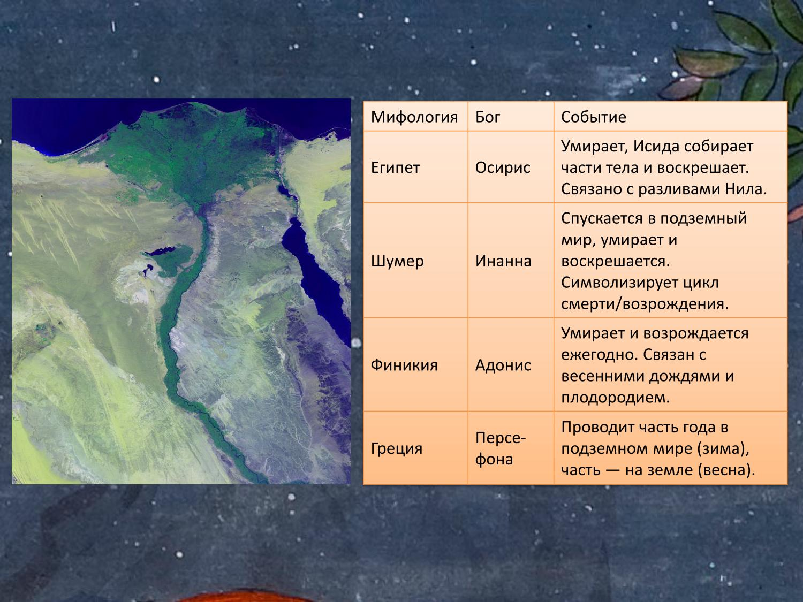
▶ Энциклопедия индийской философии под редакцией Степанянс, учебное пособие Канаевой, несколько работ Шохина, переводные работы Капали Чаттерджи, которые во многом устарели, но все еще могут где-то удерживать свою марку. Это то, что касается русских, к сожалению, маловато выходит таких работ у нас на русском языке все еще. На английском их, безусловно, гораздо больше. Это вот из тех, которые выделить очень такой фундаментальный труд, который у нас не переведен на русский, это История индийской философии в пяти томах, впервые это появилось еще в двадцать втором году, такая очень-очень масштабная работа, очень скрупулезная, куча деталей, куча цитат на санскрите без перевода на английский, и собственно, может быть, из-за такой излишней детализированности и дотошности текст этот все еще как-то не могут перевести на другие языки, по крайней мере, русский, а может быть, это и не нужно. Работая Фраувалльнера, тоже местного индолога, собственно, в двух томах тоже можно рекомендовать.
▶ Критическое изучение индийской философии Шармы, ну, конечно, Рафаэля Торелла, философские традиции Индии, и другие. Из их самых последних, наверное, это работа Адамсона и Ганери, классическая индийская философия, вышедшая в Оксфорде в двадцать втором году. В целом и на Западе таких работ немного, во многом это еще связано с тем, что много уже как бы сделано, много уже сказано, повторяться никому не хочется и интереснее, наверное, залезать какие-то отдельные узкие темы. Тем не менее тут есть еще куда развиваться. Сначала по традиции рассмотрим терминологические вопросы.
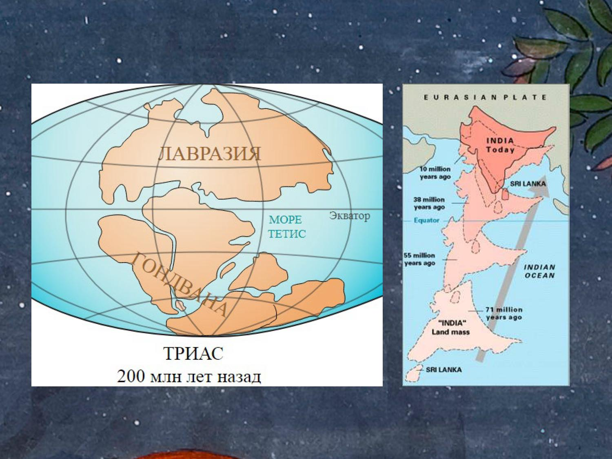
Что такое «индийское»: от реки Синдху к Бхарат YT/RT/AU
▶ Кое-что я здесь изменил по сравнению с сводным занятием, добавил кое-что. Поскольку мы имеем дело с индийской философией, то сразу же должны определить, о чем пойдет речь, поскольку оба слова, которые входят в состав этого словосочетания, они являются проблемными. Потому что, когда мы говорим индийское, нас сразу в голове возникает Республика Индии, появившаяся в 1947 году на карте, сравнительно молодое государство, но на самом деле, конечно, Индия это намного-намного древнее и глубже и территориальное обширнее, чем вот то, что сейчас мы имеем на карте. Итак, все это восходит в своих истоках названию реки Синдху, собственно санскритское Синдху означает река, река под названием река, которая сейчас в основном протекает по территории Пакистана, то есть в Республику Индии она там весьма немного заходит. Рядом с жившие с индийцами, точнее с индариями иранцы, которые не могли выговорить толком синдху, они назвали это хинн, то же самое, только на персидском языке.
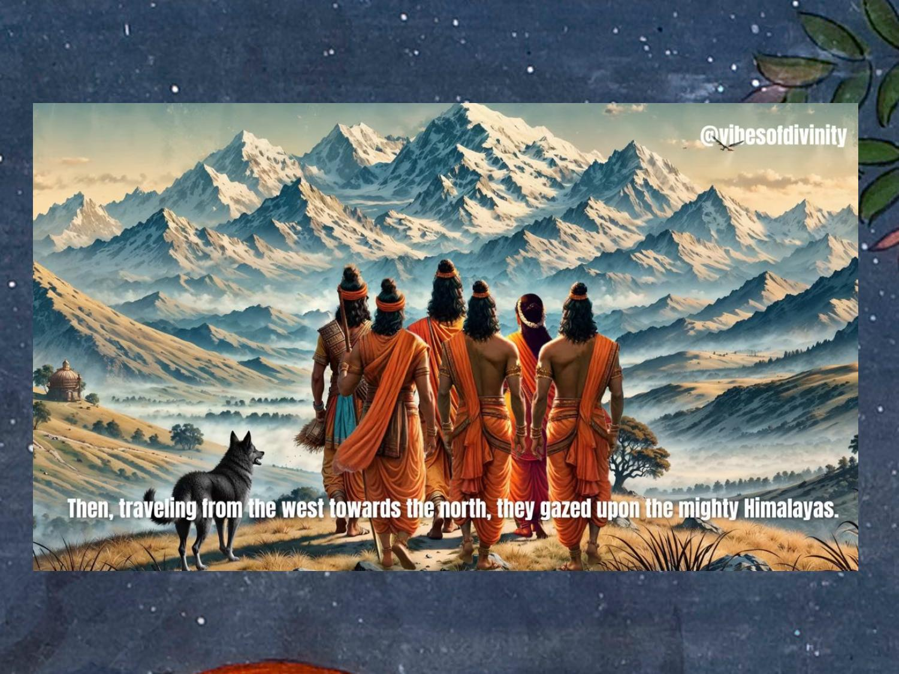
Название Индии: Синдху, хинду, «Индия» YT/RT/AU
▶ Это слово они передали уже в Грецию, то есть в Греции эта же река получает название Индас, отсюда в европейские языки попадает, включая наш русский язык. От названия реки идет целая серия разных названий, включая слово Индия, индийцы, индуизм и так далее. Все эти названия являются для индийцев неродными, поскольку у них никогда не возникал соблазна образовывать название страны от названия реки. Так получилось, что как-то закрепилось внешнее обозначение, индийцы вынуждены были с этим считаться. Как и собственно я сейчас говорю индийцы это тоже такое совершенно условное понятие, которое появилось буквально совсем недавно.
▶ Индийцы всегда себя идентифицировали по другим основаниям, даже этнически они были по-другому себя выстраивали: тамилы, маратхи, бенгальцы, то есть всегда какой-то конкретный регион с определенным языковым субстратом. Я уж не говорю про индуизм термин, который появляется только в конце XVIII века начале XIX в трудах миссионеров, которые тем самым попытались, вводя индуизм, отграничить, показать, что это такое индийское язычество, которое необходимо вытеснить истинной верой, то есть христианством. То есть слово индуизм имеет четкий колониалистский характер. У индийцев были, конечно, в ходу собственные названия, которые некоторые из них я могу сейчас озвучить, в частности санскритское слово Бхарата или Бхарата-варша, что чаще встречается, то есть страна потомков царя Бхарата, Был когда-то легендарный царь Бхарата, который якобы завоевал весь индостан, вот был представителем лунной династии, так называемой, и в результате его потомки стали править этой страной в разных областях и так далее и от названия этой страны уже возникает современное название на хинди бхарат который является собственно, официальным внутри индийским обозначением. Республика Индия, у нас это используют именно индийцы.
▶ Английский язык в Индии является государственным языком, они все еще не могут от него избавиться, хотя давно хотят, но так получилось просто. Поэтому у Индии есть два таких названия, одно из которых экспортная это Республика Оф Индии, второе для внутреннего пользования это слово Бхарт, причем не совсем понятно, что входит именно территориально в Бхарт, древнюю Бхарту. Само это слово ну начинает употребляться ближе к концу старой эры на самом деле, то есть оно далеко не сходу начало обозначать какую-то единую общность там культурную и территориальную, а вот когда, что более реально на самом деле это существование такого племени как Бхарата, когда арийские племена носителей Вед и на которые впоследствии стал опираться уже ортодоксальная философия, они появились в Индии больше 3000 лет назад, а, собственно, у них не было ещё такого обозначения, них там было множество племён и самое, пожалуй, известное, самое сильное было племя бхартов. Возможно, вот от этого племени впоследствии возникает название собственно страны и некий царь, который когда-то якобы жил мифологически. Кроме этого названия, которое в основном ассоциируется с северными регионами страны, но было еще другое популярное название Арьяварта, которое вот здесь ниже есть карта северных регионов Индии, и согласно Законам Ману, известный такой вот этико-правовой книге из жанра дхарма шастр, созданная в начале новой эры, Арьяварта означает области от Гималаев на севере до гор Виндхья в середине страны, скажем так, ближе к югу.
Территория и множество государств Индостана YT/RT/AU
▶ Виндхя как раз это горы, которые делят Индию пополам. Северная Индия, южнее, южные. Соответственно, вот, ну и между двумя океанами что добавляет мало, то есть между западным и восточным, то есть вот примерно то, что выделено здесь на карте, это как раз территория Арьяварта, территория индоариев, где складывалась и развивалась классическая индийская цивилизация, и в том числе закладывалась основа для философского творчества. Надо, конечно, добавить, что на территории, которую мы рассматриваем, территории Индостана, Южной Азии, с течением веков было множество различных государств, очень много, и эти государства друг с другом находились в самых разных отношениях, они конфликтовали, они дружили, они там что-то с ними только не было, и поэтому каждая такая страна единомоментно могло находиться там до тридцати государств древности. По крайней мере, так утверждают тексты буддийские, и на основе работы Панини, который там тоже употребляет какие-то примеры, ориентируясь на современные действительность.
▶ Махаджанапады государство крупное и не очень, то есть тридцать государств могло быть, представьте, да, и, соответственно, каждое из них имело право называться Индией, поэтому для тогдашних индийцев, что вот соседние какой-то государства территории Индастана, что там какая-то огромная фрейланга или там Афганистан какой-нибудь и прочее, все это как бы на одном уровне рассматривалось. То есть они еще не делили так границы, как мы сейчас делим, Поэтому с таким главным скрепляющим фактором оставалось культурное единство, поэтому мы не слишком погрешим против истины, сказав, что индостан это, прежде всего, территория единой культуры, но не территория единого государства. Сейчас на этой территории располагаются три государства, даже четыре, даже пять, то есть это, соответственно, Пакистан, Бангладеш, Индия, Шри-Ланка и Непал. Ну, в принципе, Бутан еще можно добавить, но Бутан никогда не играл особой роли в этой истории, поэтому можно оставить. Вот, по крайней мере, то, что раньше называлось колониальное время Индией Бритиш Радж, это сейчас три страны: Бангладеш, Пакистан и Республика Индия, которые составляют почти два миллиарда человек в настоящий момент.
Черты традиционной индийской культуры YT/RT/AU
▶ Это достаточно много, и если бы страна не была разделена в сорок седьмом году, когда произошла независимость, то сейчас, наверное, это бы очень гигантская, масштабнейшая, может быть, самая крупная, крупное государство в мире, не только по численности, но и по другим факторам. Как я уже писал в анонсе, философия является частью традиционной индийской культуры, поэтому следует отметить именно то, какие черты есть в традиционной индийской культуры, потом мы эти черты будем находить и в философских произведениях. В частности, я сейчас выведу все эти пунктики, буду их по отдельности отмечать. Восемь пунктов на самом деле просто здесь отмечено не все из них относятся строго к Индии, потому что на традиционная культура во многом похожа, поэтому какие-то особенности могут быть и там, и там, но тем не менее, то есть индийская культура она одна из наиболее древних в мире, она насчитывает как минимум 5000 лет непрерывного развития, если мы берем в расчет истоки хараппской цивилизации, а если мы еще углубимся в Мехргарх и еще там тысячу-две можно добавить лет. По крайней мере 5000 лет это точно, и Сохраняется по-прежнему эта традиционность, несмотря на все нынешние веяния, глобализации, все равно сохраняется непрерывность, находящая в глубины веков.
Древность, непрерывность и наставничество YT/RT/AU
▶ Следующий момент по непрерывности традиции есть преемственность, то есть традиция это всегда передача каких-то навыков, каких-то умений, знаний, которые когда-то были созданы, потом потомками бережно поддерживаются и укрепляются в более поздних, может быть, более худших условиях. Для Индии характерна какая-то регрессивная модель понимания истории, если говорить об истории, принятой к Индии. Чем дальше, тем люди живут хуже, они мельчают, они становятся какими-то жестокими, плохими в целом, поэтому чем хуже становится современность, культура с точки зрения самой культуры, тем прочнее надо держаться за прошлое, за какие-то прекрасные образцы, созданные во времена Золотого века условного. Это надо все поддерживать, поддерживать и передавать без каких-то искажений. По факту, разумеется, там была масса искажений, масса внесений нового под видом старого какого-то, но тем не менее, формально, по крайней мере, они считали, что преемственность сохраняется.
▶ Ну а раз это передача навыков и знаний, то тут, конечно, большое значение имеют те люди, которые этими знаниями обладают, это разные наставники, гуру и действительно для индийской культуры характерно очень большое уважение к институту учителей, наставников, которые как раз и могут сохранять те образцы культуры, какими бы они ни были, из глубин прошлого доносят до настоящего, передают своим ученикам, которые тоже своим ученикам начинают передавать, поэтому не случайно наставники воспринимались в Индии как божества какие-то, как аватары, им поклонялись, но следует иметь в виду, что это, кстати, плохо понимается на Западе, которые часто видят в этом такую слепую веру, что это культ личности, тут нет никакого культа личности, потому что наставники в Индии это воплощенное знание, поэтому почитают не столько конкретных садху, сколько то, что эти садху в себе содержат, эти знания великие, они гораздо важнее. Идем дальше накопительно-синклюзивизм, то есть это все можно объединить в один пункт, хотя немножко отличаются. Индийская культура ничего не забывает, она ничего не отбрасывает, она все копит, копит, копит и подобно тому, как, допустим, растут там в пещерах сталактиты, сталагмиты, то вот как-то вот растет, усложняется, обогащается индийская культура с каждым новым столетием, с каждым новым всплеском очередных каких-то народов, которые пришли на эту территорию, принеся с собой какие-то образцы собственной культуры.
Накопительность, инклюзивизм и идеализация прошлого YT/RT/AU
▶ То есть мы, когда говорим о традиционной культуре Индии в целом, мы не должны забывать, что она слагается из-за традиций тех народов, которые в Индию приходили в разное время. Сейчас нет возможности долго в это вдаваться, которые что-то с собой приносили, и это оставалось на территории и развивалось дальше. Вот, то есть вот накопительность это означает, что множество самых разных навыков, теорий, практик, верований стекалась в Индию отовсюду, это никуда не исчезало, это могло просто где-то сохраняться какое-то время, потом через много столетий или тысячелетий это внезапно начинает прорастать, как было, в частности, с хараппской цивилизацией, которая вроде бы исчезла в середине второго тысячелетия до новой эры, но она сохранила массу интересных каких-то навыков, культов, религиозных практик, которые потом через тысячу-полторы тысячи лет внезапно начинают всплывать в других каких-то регионах Индии. Это хорошо показывает Мирча Элиаде в своей работе Йога бессмертия и свободы, и не только ум, С накопительностью таком смысле связан также инклюзивизм, то есть буквально включительность такая, то есть это стремление включить готовность включать, ассимилировать то, что создавалось где-то в других местах, в других регионах, других культурах, не отбрасывать это, а все включать и развивать. Это такая особенность индийской культуры, которую отметил в свое время еще Пауль Хакер, известный индолог, говоря об инклюзивизме.
▶ Идеализация прошлого, частично я уже об этом говорил в связи с наставничеством, опять же, это не просто прошлое, которое куда-то ушло и исчезло навеки прошлое это носитель глубинных смыслов. Прошлое это фундамент, на котором стоит настоящее. В прошлом создано все самое лучшее, чем питается последующая индийская культура, поэтому прошлое, безусловно, в почете, настоящее воспринимается как ухудшая версия прошлого, а будущее вообще воспринимается с большим недоверием. Поэтому прошлое это прекрасно, прошлое почитается, прошлое культивируется. Отсюда те авторы, которые создавали замечательные образцы, вот эти вот они должны быть сохранены, они должны быть переданы.
▶ То есть это то, что часто эти авторы легендарные мудрецы и можно усомниться в том, является ли тот же Патанджали, к примеру, автор Йога-сутр или там Капилы, который там тоже что-то писал якобы. В этом месте в общем-то вполне уместно, местные сомнения, тем не менее, как бы для индийцев это не имеет смысла сомневаться, потому что легендарный мудрец это не просто легендарный мудрец, это знатоки, это носители глубинных смыслов, и поэтому они себе скорее там руку отрежут, чем будут сомневаться в существовании Капила, и Патанджали, и так далее, и других великих учителей прошлого. Соответственно, а как развивать там традицию, если вот эти великие мудрецы создали какой-то краткий текст и всё, что дальше делать? А дальше включается в работу комментарии индийская культура традиционная это культура комментариев. Опять же, какую бы мы область не взяли, и театральные какие-то, и политические практически любая область, включая философию, она вся комментаторская.
Культура комментариев и неисторичность YT/RT/AU
▶ Это важно, потому что без комментариев нам сложно понять какие-то базовые тексты индийские, культурные, и комментарий он как бы раскрывает тот замысел, который у автора был, в том, что комментарий в общем-то, как правило, намеренно воспринимает себя как вторичный по сравнению с комментированным текстом. То есть они как будто бы стараются себя умалить, несколько чуть-чуть обесценить все по сравнению с этими гигантами прошлого. А вот они, поскольку они древние, они в прошлом жили, то они создают эти замечательные произведения искусства, науки и культуры, а мы, комментаторы, мы всего лишь так вот чуть-чуть поможем этим древним мудрецам проявить этот смысл, который они, конечно, подразумевали, просто они не все сказали, а в нынешних исторических условиях мы можем эти смыслы сделать наглядными для всех желающих, то есть иными словами, это поговорка: всё новое это хорошо забытое старое работает в индийской традиционной культуре на все 100, всё это уже сказано, всё уже было, всё уже на много раз познано, поэтому комментарии просто вот выуживают все это, которое якобы там содержится в тексте целиком. Есть ничего мы типа от себя не добавляем, ничего не придумываем, просто вот у этих замечательных авторов извлекаем то, что они подразумевали, но не сказали это в полной мере. Полной мере, а о сиделизации прошлого также соседствует не историчность индийской.
▶ В Индии не было никогда своих Геродотов, своих Несторов, своих сына Тяней и даже, то есть такая условная, можно сказать, историческая работа Кальханы Раджатарангини, написанная в XI веке, в XI-XII веке. Такой гигантский труд, на самом деле считать его тоже историческим сложно, потому что там полным-полном каких-то легенд, сказаний, напоминающих пуранические произведения. Вот поэтому для истории вообще, как вы понимаете, должно быть ощущение чего-то уникального. Историческое мышление это ситуации, размышления о ситуациях, которые никогда больше не повторятся, а если все движется по кругу, вот так вот циклично, как в индийском мышлении, тогда о какой истории вообще идет речь? Все повторяется, все без конца и края повторяется.
Цикличность времени YT/RT/AU
▶ Это такое вот своеобразное подражание природным ритмам в обществе, собственно, также протекает как и в природе. Отсюда вот закрепившаяся в индийском сознании идея цикличности мира, с этим тесно связана идея перерождений, тема сансары хорошо очень легла, но вот этот циклизм, который у них в крови еще там со времен Ригведы, а когда вот так много цикличности, ну история становится чем-то очень таким туманным, потому что история это всегда линейка, развернутая из прошлого в будущее, это прямая линия. Вот поэтому здесь история не терпит повторений, это уже не история. Ну, точнее, как бывает, конечно, в ходе истории попытки что-то повторить, но по факту это всегда оказывается что-то новое. То есть отчасти какой-то вкус к истории индийцам стали прививать, наверное, только арабы, когда ну шли там мусульмане, которые в Индии начали активно появляться где-то в веке в десятом- одиннадцатом, вот тогда что-то такое начало проклёвываться, но опять же, это только очень спорадически.
▶ Но в Индии время же не линеарно.
▶ Времени в Индии нет, там цикличное время. Я так и говорю. Поэтому идеализация прошлого она тесно связана с неисторичностью, принципиально дружит и отсюда такое недоверие к будущему, недоверие к какому-то, наверное, излишнему авторствованию, извините за неологизм, то есть стремление как-то продемонстрировать свою авторскую уникальность, личность. Хороший автор тот, который не будет о себе много говорить, как-то бить себя в грудь и кричать: Смотрите, какой я хороший! Как там Пушкин говорил, айда Пушкин, айда сукин сын, да, молодец, создал такую прекрасную вещь.
▶ Нет, в основном автор старается себя как-то чуть-чуть скрыть в тень, особенно если это автор комментария, конечно же, это в первую очередь к ним относится. Вот синтетичность имеется ввиду взаимосвязанность разных областей культуры друг с другом, танец, допустим, связан с музыкой, что понятно, с драматическим искусством, с сознанием психологии, с сознанием астрологии. Если есть какая-то скульптура, то там обязательно и архитектура, и живопись подтягиваются. То есть специалист в какой-то области, он так или иначе задействует еще что-то помимо этой области. В результате индийская культура представляет собой такую совокупность взаимосвязанных областей.
Синтетичность и доминирование социума YT/RT/AU
▶ Конечно, нельзя говорить, что там каждый крупный специалист во всем разбирается, такого, конечно, никогда не было, но то, что этот специалист может выходить за пределы своего узкого сегмента и обладая таким многослойным видением, созерцая какие-то, имеет смыслы в других сегментах умудряясь как-то наводить мосты. Действительно так. Эти все черты, которые я здесь перечисляю, они потом скажутся и в традиционной индийской философии. Далее, доминирование социума над индивидом. Это, наверное, это что-то подозрительное, индивиды долго не живут, человек всегда вписан в какие-то группы, какие-то кластеры, классы и представляет собой пучок предписаний в каком-то смысле.
▶ Социум в той или иной степени явно определяет повестку или, говоря индийским языком, дхарму для каждого отдельного члена социума. Поэтому даже когда бы аскетов каких-то югинов, отшельников, которые вроде от социума уходят и там живут какими-то своими индивидуальными делами, но там тоже существует по сути дела они входят в такой неформальный круг йогинов, у которых есть тоже какие-то предписания, какие-то обязанности, какие-то упражнения, так или иначе здесь тоже он подотчётен в каком-то смысле этому социальному окружению, хотя действует, разумеется, индивидуально. Ну и в целом для культуры характерно религиозно-мифологическое мышление, то есть здесь вообще невозможно встретить какое-то, хотя бывало, конечно, такое откровенно атеистическое суждение, Как правило, все там верят в богов и воспринимают мир с точки зрения священного слова, то есть мифа, мифас как священное слово. Собственно, индийская философия она так вот до конца не освободилась по большому счету от такого мышления. Общем, в отличие от греческой философии, потом еще коснемся этой разницы между Западом и Востоком.
▶ В общем, это у них продолжает оставаться. Дальше. Ну понятно, что вот это все, в общем много всяких черт, которые выделяют индийскую культуру, что же их в принципе объединяет? Да, вот если там посмотреть в Индии, в индийской культуре огромное количество всего и вся, там множество каких-то отраслей, много всяких там деятелей, много языков в Индии много, много народностей, много каких-то географических зон, то есть Индия всегда поражала своим многообразием, то, что бросается в глаза сразу же, как только ты оказываешься там в Индии, даже в современной, в том числе, поэтому, конечно, вопрос что это все может, чем это может быть объединено, в частности, географическая полуизоляция Индия, если посмотреть на эту карту, она расположена в таком удобном месте, в котором сложно проникнуть сходу, это все, то есть она окружена морем с юга, с запада и с востока, на севере непроходимая Гималая, на западе безводные пустыни, поэтому такой более-менее успешный маршрут это через Хайберский проход на территорию современного Афганистана Пакистана. Вот именно сюда двигались толпами разные миссионеры, какие-то кочевники, войска, и вот это не сразу, конечно, но где-то ближе к концу к началу новой эры индийцы стали осознавать, что живут в таких условиях, которые, ну, что-то, которые позволяют считать их единым, чем-то единым, и это благодаря географической полуизоляции.
Санскрит как духовная скрепа культуры YT/RT/AU
▶ Ну, полной изоляции никогда не было, но да, можно сказать о портах, вот этих вот морях, там же можно по поморью приплыть выйти, да, как бы да, но в Индии очень своеобразные муссоны, и если ты не знаешь, когда они грядут и как там крутятся ветры в районе Индийского океана, Аравийского моря, то есть риск просто не доплыть до Индии, тебе там корабль унесет другое место, какой-нибудь персидский залив там и все, а поэтому вот изучить розу ветров это достаточно простой задачей оказалось, она была решена далеко не сразу, далеко не сразу. Географическая теплоизоляция, конечно же, нужно вспомнить о санскрите, как стоит скрепе духовной, которая объединяет вот эти вот разрозненные культурные элементы. То есть большая индийская традиция большая, есть малая, малая местная, большая это вот восходящая к корейской цивилизации, основана на санскрите, то есть санскрит как язык, который объединяет людей, который представляет собой язык международного общения, которые сродни латыни в средневековой Европе, и представители разных групп населения могли понимать, даже живущих в разных регионах страны, друга, говоря говоря на санскрите, или посылая тексты соответствующие, то есть Санскрит это не только международное общение, это язык, на котором создано огромное количество текстов, философских текстов в том числе, и поэтому заслуги санскрита в хранении индийского культурного наследия просто невероятны, поэтому здесь мы не будем там преувеличивать, сказал, что это, наверное, самый важный язык с точки зрения традиционной культуры, который позволил донести до наших дней вот это все огромнейшее богатство, огромнейшую бездну всевозможных проявлений, смыслов, каких-то текстов.
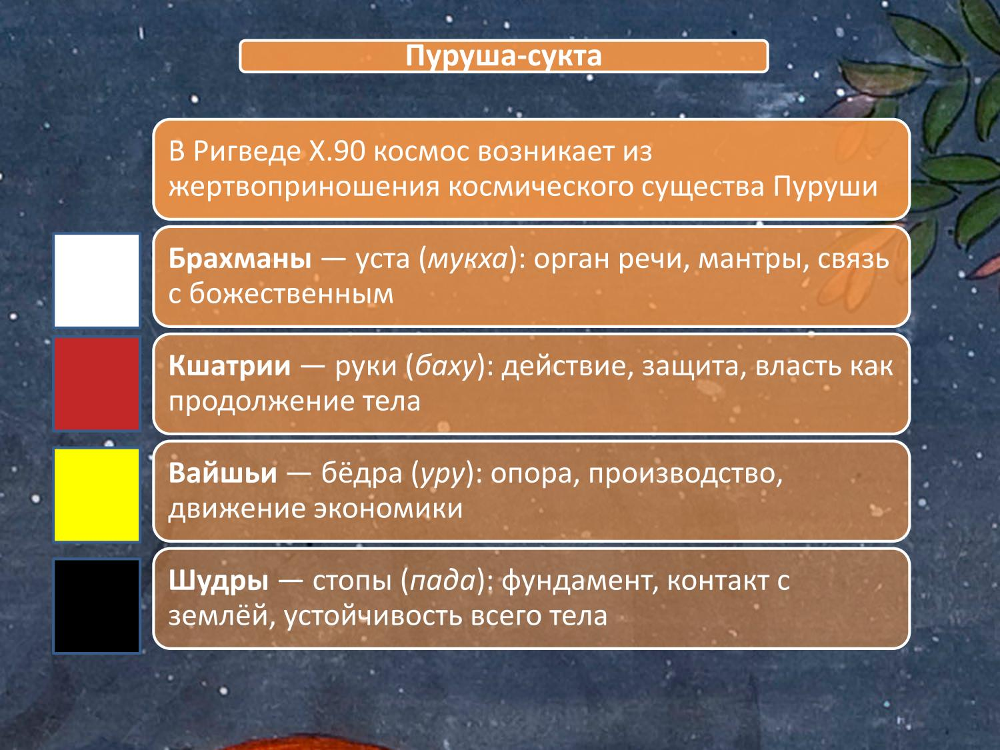
Социальный строй и роль брахманов YT/RT/AU
▶ Вот поэтому не случайно начало учености какой-либо какой-либо области культуры оно сопровождалось изучением санскрита. Каждый уважающий себя философ, кто писал на санскрите, он, конечно же, должен был изучать пани, поэтому быть знатоком с грамматикой и так далее. Социальный строй тоже является таким объединяющим фактором в культуре, то есть уже арии, когда пришли в Индию, у них было три зачатка трех сословий это священники, воины и земледельцы, а в Индии они еще добавили четвертое сословие, то есть слуг, в итоге появилась такая очень устойчивая крепкая социальная система, так называемая четыре варны, которая потом распространилась по всему индостану, и со временем на эту систему наложилась другая кастовая система, при всех, конечно, оговорках этого неудобного слова каста, но тем не менее, В итоге представители различных опять-таки народов, регионов они объединились еще и в том, что были представителями каких-то определенных сослов, то есть в основном индийская философия создана брахманами, если мы берем, конечно, в расчет ортодоксальную мысль, с неортодоксальной там немножко посложнее, то есть именно брахманы, знатокие санскриты, знатокие учености, они держали марку культурного достоинства индийской философии. Ну, добавим еще религиозность, хотя частично я уже об этом говорил раньше. В Индии, в традиционной Индии, все там во что-то верили.
▶ Было множество каких-то религиозных культов, храмов, учителей огромное количество. В принципе это и сейчас такая же картина в Индии сохраняется. Здесь следует еще учесть, что главная, пожалуй, традиция религиозная это индуизм, при всей, конечно, при всех оговорках к этому неудобному слову, созданному, по большому счёту, только 200 лет назад. Быть в Индии это означает быть немножко индуистом, который проявляется не только в чисто каких-то храмовых, культовых вещах, но и в, допустим, каких-то этикетных нормах, способах приветствовать друг друга, в употреблении той или иной пищи, в покачивании головы, так ача, так это любят это делать. Вот и поэтому вот эти все четыре таких элемента это позволяет поддерживать, позволяло поддерживать индийскую культуру в таком вот единстве, ли и тогда мы можем точно говорить, что там тамильская культура, культура маратхов, культура бенгальцев, культура кашмирцев это все равно часть общей индийской культуры, а не просто какие-то отдельные изолированные сегменты.
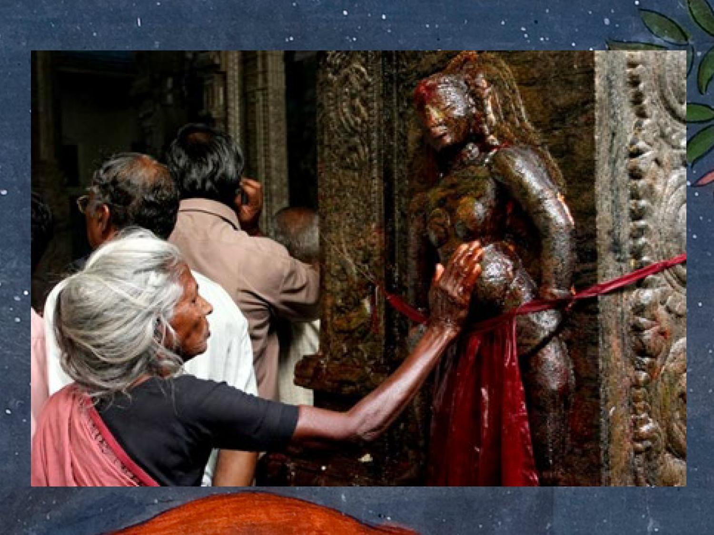
▶ Да, вот это ощущение единства, хотя, конечно, частичное, но формируется только где-то к началу новой эры, когда уже начинают часто использоваться в памяти Бхарата или на персидских манерах хиндустан появляется такой еще целее слазитька страна хинду, но в полной мере такое как бы представление то, что мы живем в единой мере, которая противостоит чему-то внешнему, у индийцев до Британского правления так и не сложилось на самом деле, все-таки вот эти региональные отличия были и им было удобнее было себя идентифицировать с каким-то конкретным народом, с этносом, ну или сословием, на худой конец, но никто там не говорил, что мы индийцы там гордились и за это, это произошло гораздо-гораздо позже и уже в современных условиях. Индийская культура она ой, ой, что-то у меня тут слегка так, да, вот сначала так Индийская культура это такой очень невероятной харизмой обладает, очень притягательно, поэтому сложно найти какую-либо культуру мира, которая была бы настолько, наверное, влиятельна в самых разных кругах, в самых разных регионах мира. Есть здесь перечисляются некоторые страны восточные, где Индия оказала Индийская культура встретила более-менее тёплый приём, оказала воздействие какое-то, то есть Центральная Азия, там, где сейчас территория Тибета, Монголия, Средняя Азия, в принципе, тоже, потому что буддизм туда пришёл Франция, Афганистан, Непал, Юго-Восточная Азия вся, Китай опять-таки через буддизм тоже оказался под влиянием, ну и в более позднее время это Европа, конечно, скорее в XX веке, XXI и шире Запад, наверное, когда индийские новые какие-то религиозные культы, опять же, хорошо забытые, старые, оказываются на Западе тоже каким-то образом влияют.
Понятие «философии» в индийской традиции YT/RT/AU
▶ Так, дальше. Вот, ну, собственно, мы теперь добрались до философии, и что мы здесь можем увидеть? Когда мы говорим о философии, то, естественно, у нас в глазах сразу же в памяти всплывает это греческое слово, придуманное эпифагором, судя по легендам, которое он отделяет от слова София в смысле мудрости. Мудрость это то, что разделяют боги, а люди обладают большими стремлениями к мудрости, поэтому они в силу своей смертной природы, никогда до богов достигнуть не в состоянии, поэтому аналогов этого слова в индийских языках нет, что давало возможность многим европоцентрично настроенным авторам утверждать, что говорить о какой-либо философии за пределами Запада это бессмысленно. Допустим, знаменитый Эдмунд Гуссер утверждал, что выражение западная философия это вообще-то втология, но философия она не может не быть западной, поэтому какая тут индийская, китайская?
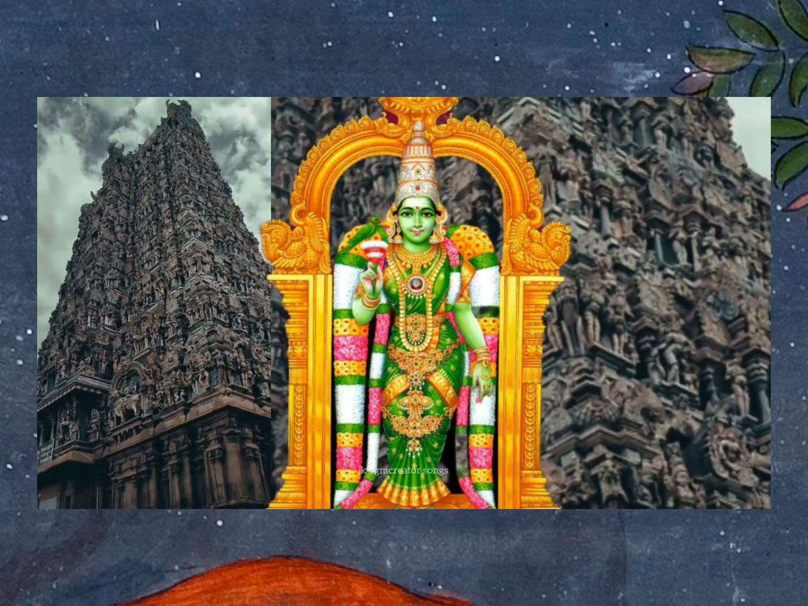
▶ И такую позицию наиболее четко выразил в свое время Георг Гегель, который был, собственно, основателем, можно сказать, таким основоположником Европы центризма, для него индийская философия, китайская философия это совсем не философия, это просто какие-то религиозные традиции, не более философия только на Западе может быть, особенно у него лидера. Тем не менее, хотя мы можем сконструировать в Индии стремление к мудрости, любовь к мудрости, но индийцы просто по-другому выстраивали это семантическое пространство, где мы можем найти отчасти какие-то аналогии не по терминологии, а по смыслу, который входит в понятие философии. И что мы здесь видим? В частности, такие слова, как unwickship, то есть исследование чего-либо систематическое. Это слово, которое впоследствии было раньше, чем, допустим, слово даршана, и оно когда-то даже отчасти претендовало на то, чтобы именно через анвикшики воспринимать отдельные философские школы.
Анвикшики, дхарма, шастра, даршана YT/RT/AU
▶ По крайней мере санкхьи там считали в свое время лакая, йогу классическую называли на рикшике. Потом она вышла из потребления. Слово дхарма, естественно, используется. Дхарма это такая, я бы сказал, затычка в любой бочке, где-то что-то не хватает обращаются к дхарме. Учение, закон там сотнями всяких значений есть и среди прочего, конечно же, это ещё и философия.
▶ В основном, когда говорить о философских школах, то понятие дхармы используется для так называемых неортодоксальных традиций, то есть это Будда дхарма, Джайна дхарма, то что мы называем буддизм и джайнизмом, вот, а для ортодоксальника используется, конечно, другое понятие. Шастра наука, система, то есть систематическое околонаучное знание, ну щастра все-таки не философия, или тантра систематическое изложение какого-то, между тантре и шастрой практически нету различий именно в каком-то понимании оформления знания, специализации знаний. Речь, конечно, не идет о тантризме в смысле известного всем направления, которое есть в индуизме, буддизме. Речь идет именно о систематически оформленном знании. Допустим, шанкара говорил о самкхека о капила тантре, то есть это учение знания капилы, основателя санкхьи.
Даршана: определение и специфика YT/RT/AU
▶ Тем не менее, наибольший укрепился термин даршана созерцание узрения, созерцать, видеть. Однако этот термин тоже имеет, конечно, свои ограничения и его сложно с философией сопоставить, потому что греческое слово философия оно все-таки имеет родовой характер, то есть есть область знания, которая выражается в академии Платона, в реке Аристотеля, скептиков, стоиков и так далее, а все вот это философия, и все греческие философы знали, что они занимаются именно философией. Здесь Даршана это конкретная школа философская, религиозная философская, поэтому тут родового понятия, в общем-то, так и не было создано. Это не философия в целом. Еще важный момент в то время как греческая традиция она философская, она началась с некого вопрошания относительно уместности вообще мифов, религий, богов олимпийских, и стала как-то от этого постепенно отходить с болью, с трагедиями, с казнями, вспомним Сократа, который за это пострадал в свое время.
▶ В Индии этого не произошло, она в общем-то так не стала отделяться от научной сферы, от религиозной сферы, от мифов всяких и уж тем более жизненной практики. Все это в философии сохранилось и в отдельно взятом тексте мы можем все вот это встретить на самом деле. Не во всех, конечно, текстах, но во многих. Допустим, в тех же йога-сутрах мы встречаем описание, что у Патанджали, что у комментаторов Вьясы описание устройства Вселенной, которое выдержано вполне в мифологическом ключе, и это вполне там органично смотрится, потому что как-то к месту пришлось и все это описывать. Дальше, итак, как можно понять Даршан?
▶ Ну я определяю ее как Даршан это система духовно-рациональных познаний, навсегда освобождающих человека от сансары, за исключением, конечно, локаяты, которые здесь своеобразные тезис, но в целом вот во всех остальных случаях это именно тракт, то есть здесь и духовности находится место, и рациональным каким-то моментом, разумеется, и важно отметить то, что это такая прагматичная дисциплина, которая выводит человека напрочь навсегда вот из этого пленного окружающего мира, подверженного плену и весьма негативно показывающего, то есть обратной дороги уже нет, если человек уверенно занимается философией и следует тем рекомендациям, которые там содержатся, практикам, которые там описываются, то все он уже с концами уходит, а ее больше здесь мы не увидим в следующих воплощениях, по крайней мере так они это показывают в своих произведениях, демонстрировали, условно, какой-то оптимизм. Философия индийская носит такой инструментальный характер, то есть имеется в виду, что она заточена на результат. Индийскую философию нельзя изучать ради самой индийской философии, то есть тех, кто тогда этим занимался, есть они как раз-таки берут этот инструмент для того, чтобы с его помощью обретать освобождение, достигать какого-то идеала, поэтому философия ради философии, размышления, что такое философия, как бы для индийцев не характерны. То есть они берут это, потому что это полезно, это эффективно, по их мнению, это важно.
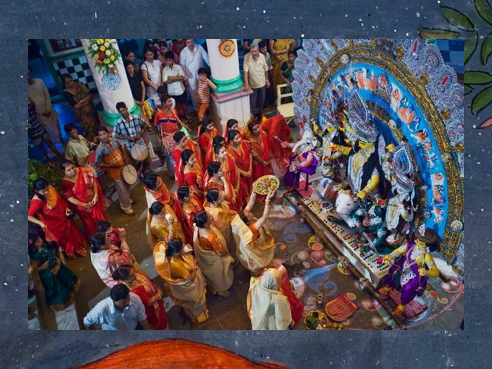
Три вида страдания и цель философии YT/RT/AU
▶ И от чего, собственно, они хотят освободиться? Когда мы говорим о сансаре, буддийское слово, появившееся далеко не сразу, хотя оно уже было в ходу, разумеется, когда складывается в классическом виде индийская мысль, но тем не менее сансара это страдание, а страдания могут быть трех разных видов страдания, которые ты сам себе нанес своим само детством или своей глупостью, или еще чем-нибудь, происходит дисбаланс ДОШ в организме, тело начинает как-то буксовать и в итоге человек заболевает или умирает, это Душа, Дух, так точно так же тебе могут сбить с толку другие существа там собачка покусать или там какой-то вирус коронавирус вторгнуться в твоё нежное тело и тогда говорят об хипхаутике, то есть это страдание, которое тебе наносят другие живые существа. Ну, бывает страдание, которое, как говорится, непреодолимой силы, от погоды, катаклизмы, землетрясения, наводнения и прочее то, чем манипулируют боги. Почему они там себя ведут? Вопрос уже к ним, у них свои какие-то есть на этот счет соображения, но так или иначе по мнению лица вот эти более возвышенные силы они тоже на людей влияют, причём не только чисто внешней стороны, но и изнутри, то есть если человек допустим становится одержимым, сходит от ума и так далее, психика становится в весьма шатком состоянии, это означает, с их точки зрения, что кто-то из богов, ну или из демонов, или из духов, здесь разница не важна, он начинает таким человеком управлять как бы изнутри, и тогда человек становится сам не смурый.
▶ Вот собственно эти три вида страдания это то, от чего они хотят освободиться. Хотя, конечно, далеко не во всех текстах это именно такая фраза представлена, но во многих это есть. Конкретизация страданий. Дальше. Философия индийская в Средние века начинает разделяться на астику и настику, хотя сами эти термины были раньше, конечно, но вот в таком классическом виде они складываются достаточно поздно.
Астика и настика: ортодоксия и гетеродоксия YT/RT/AU
▶ В чём критерий разделения на астику и на астику? Есть три таких основных критерия, три вида веры, то есть верим мы в Веды как истинный источник знаний или не верим Веды священный текст индийский наполнен. Вера в Брахму и Атму, то есть высшее начало абсолютное и в высшего духа, вера в посмертное существование души или там богов, высшее какое-то божество, то есть такая небольшая сборная солянка, ли, и поэтому по этим критериям и разделяются, соответственно, традиции, хотя на самом деле это все очень-очень нечетко, неточно и представители разных лагерей могут периодически оказываться в других лагерях по каким-то критериям, то есть иными словами, те, кто верит во все это, если так очень как бы обобщенно представить, это представители астики, то есть ортодоксы, и на астико это неортодоксы или гетерододоксы, которые отрицают, отрицают это все. На самом деле, допустим, мы берем джайнов, которых считают Настиками, то есть джайны они верят в посмертное существование души, они верят в Атму, например, то есть уже как минимум по двум критериям они попадают в разряд астики, а с другой стороны, у них были свои какие-то не однодоксальные воззрения применительно к третьему пункту. То есть мимансы не верила в какое-то высшее божество единое, но в санкхье в санкхье кариках этот момент вообще опущен, как будто бы там никакого бога вообще нету.
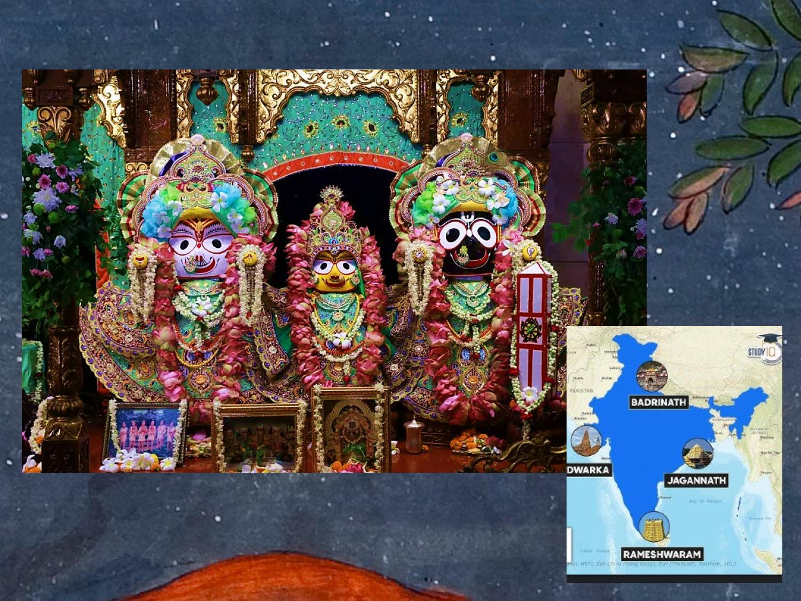
▶ То есть по третьему пункту представители астики оказываются в разряде настиков, например. Так что здесь это очень такое весьма ситуационное, что ли, разделение, которое до конца, так в традиции, не было проведено, не было, но тем не менее, когда уже укрепляется разделение лагерей, Настику, Настику, то как-то об этом уже переставить сильно, скажем так, сильно об этом задумываться. Просто есть противники, против них мы воюем, а вот есть наши, которые получше, чем эти противники. Законы Ману, в которых, возможно, это одно из первых таких использований этого слова, говорится, должен быть изгнан человек, который отрицает шрути и смрити, и в оригинале стоит слово настика, то есть вот этот человек, который отрицает шрути и смрити, то есть отрицает Веды Шрути и отрицает тексты, которые примыкают к грейдийской традиции. Это разные сутры, эпические сказания, ураны, уже более поздняя правда.
▶ Так что бы настикой оказывается некий протестант, который воюет с с установившимися порядками, который может уложить какие-то альтернативные варианты по текстам или по носителям каких-то сакральных знаний. В общем, такое разделение носит, безусловно, оценочный характер, и оно приходит именно из среды астиков. Это астика разделяет на астиков и настиков, потому что, ну, настика это такая оценочно низкая, скажем так, ступень, поэтому здесь все очень ангажировано и как бы несколько чересчур обобщенно выглядит. Так, я вижу, появляются вопросы, хорошо, что там задаете друзья, я потом в конце лекции на них отвечу. Так и сколько же всего существует даршан при увеличении, допустим, к астике.
Шат-даршана: шесть ортодоксальных школ YT/RT/AU
▶ Наиболее популярная модель это шат-даршана, то есть шесть даршан, которые связаны с, соответственно, вот такими философскими школами, как санкхьи, йога, вочайший камень манса и веданты. При этом они разбиты попарно. Это опять-таки более позднее стремление как-то поженить, потому что в каждой паре есть свой муж, своя жена. Конечно, сами эти дисциплины они понятия не имели, что они как-то будут в парах, это уже такая рефлексия более позднего времени, сложившаяся в две веке, наверное, в двенадцатом или больше, или позже. И степень ортодоксальности в этих школах она разная, допустим из этих шести самые ортодоксальные это Миманса и Веданто, потому что они очень большое внимание уделяют Ведам, они цитируют без конца Веды, они их комментируют, в общем для них Веды это действительно источник всяких смыслов, остальные четыре к Ведам относятся либо с уважением, либо с равнодушием, а в некоторых случаях, собственно даже в случае с санкхьи, санкхьи карики, там даже есть некие выпады против, что вообще очень странно смотрится с учетом того, что самка сама является по логике ведийской системой, а там она критикует веди, немного, но тем не менее в начале текста.
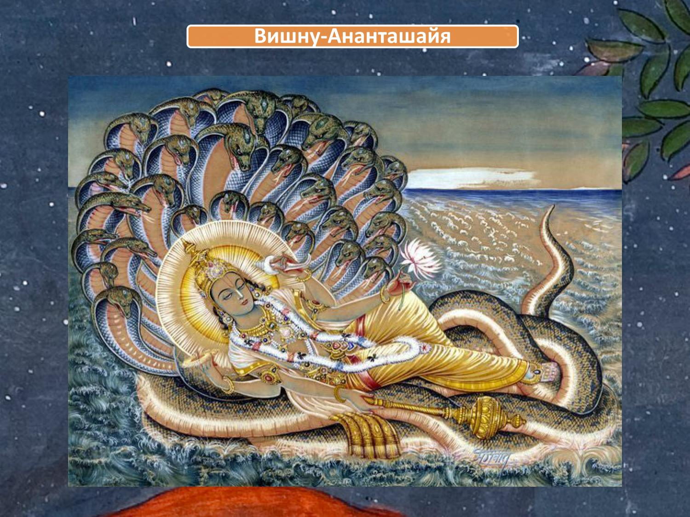
▶ Так что это тоже порождает вопрос. Каждому основателю приписывается текст в жанре сутр, то есть очень легко понять, какие главные тексты в этих дисциплинах: йога-сутры, ньяя-сутры, вайшешика-сутры, миманса-сутра, веданта-сутра. Из этих перечисленных наиболее крупные это миманса-сутра, там порядка чуть ли не 3000 сутр, очень много, остальные поменьше, гораздо меньше, допустим, йога-сутрах, там чуть меньше двухсот сутр, по объему не сопоставимо, но единственное исключение это санкхьи с сутрами. Это, вероятно, связано с тем, что из этих шести санкхьи это самая старая школа, и она сложилась еще тогда, когда необходимость как-то выражать учение, видео вот такой-то квинтэссенции, какой-то основного, базового текста еще не было, плюс ко всему, к тому времени, когда появилась классическая санкхьи, было несколько школ, которые разделяли санкхьяические идеи, и ни в одной из них не пришла в голову мысль как-то сделать какой-то текст, который бы вот это учение в себе содержал в сжатом виде. Сутра, на самом деле, текст он есть, но он создан очень поздно, в глубокие средние века, там индийские века, где-то в 13-14 он приписывается капель, но, вероятно, это сделано для того, чтобы уравнять шансы, скажем так.
▶ То есть те, кто писали этот текст и потом выдавали его за капила, они видели, что у их конкурентов, у йоги, у я и у айшишики, есть такого рода текста, а у них нету, это как-то по понятиям, поэтому вот и решили, что в санкхье тоже должно быть нечто подобное. Так дальше. Ну что касается настиков, то здесь в основном выделяют, когда мы говорят о насте, как две основные школы тут подразумеваются это буддизм и джайнизм, то есть Буддха, основатель Будды Шакьямуни, и основатель джайнизма это джина Махавира. Будда и джина Махавира это эпитеты, которые подарены их носителем, последователями за их, так сказать, выдающееся достижение. Ну, к Настикам также часто относят Локаяте, которая там ни в бога, ни в черта не верит.
Настика: буддизм, джайнизм, локаята, аджи́вика, аджняна YT/RT/AU
▶ Основателем считается Брихаспати легендарный учитель богов. Аджи́вика Маккхали Госала с таким вот экстреминистическим клоном школа, все о том, что все предопределено. Ну и Аджняна, скептическая школа, которая была создана еще Санджай Абдултхипутой, одним из учителей теоретических, с которыми боролись буйнисты. Очень мало, что неизвестно, поэтому когда речь ограничу буквально минутами 5-10. Дальше индийские историко-философские сочинения, то есть помимо того, что в Индии существуют собственно философские тексты, есть еще также историко-философские тексты, и в общем уже с восьмого-девятого века начинают составляться произведения, в которых осуществляется рефлексия над философскими какими-то сочинениями прошлого.
Историко-философские компендиумы YT/RT/AU
▶ Первым из них был Харибхадра Сури, джайнский монах из Гуджарата, который был очень человеком эрудированным, вначале он был брахманом и с удовольствием набивался в ученики любому, кто превосходил его в каких-то познаниях. Однажды он услышал, как какая-то джайская монахиня читает какой-то текст, смысла которого он не понял, и этого было достаточно для Харибхадры, чтобы он отправился к этой женщине, она его направила там каким-то монахом и, соответственно, а те ему сказали, что мы будем тебе рассказывать, что такое вот, в чем смысл этого стиха, если ты станешь джайном, поэтому пришлось брахману становиться джайном. Вот и он, в принципе, довольно быстро овладел джайнской ученостью, также как раньше брахманской ученостью, стал писать разные сочинения, включая Шаддаршана-самуччая, то есть собрание шести даршан, собрание шести даршан, хотя там не вот эти шесть даршин, которые знаем, там на самом деле их семь вообще-то, там ньяя, и вайшешике, буддизм, джайнизм, лакая, еще там что-то, миманса, по-моему. И хотя их семь оказалось, а да, кстати, вот они, впечатления, буддизм, не санкхьи, а джанизм, большой шика мимансаки и локаяты. Вот эти вот Как так получилось, что наши все математики вместо шести Даршан почему там не сапта Даршан?
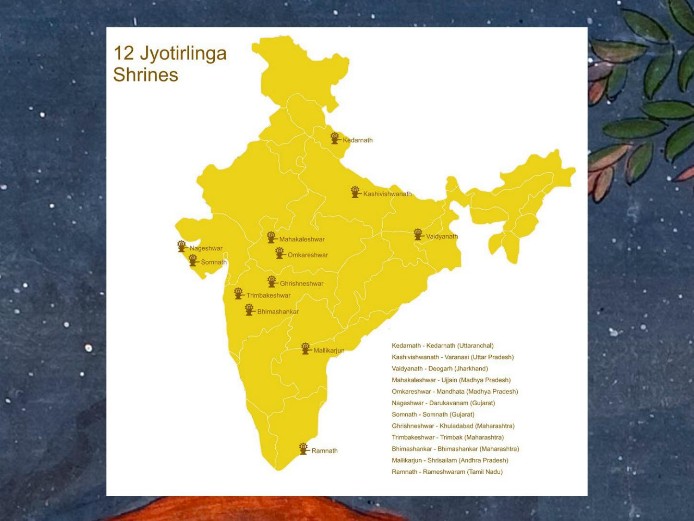
Харибхадра Сури и «Шаддаршана-самуччая» YT/RT/AU
▶ Почему именно сапта? Потому что говорил, что не я и его шишек, это в принципе одна система, поэтому можно как-то пренебречь различиями, поэтому он вел очень локаяту. Так что вот само вот это понятие шести Даршан оно сложилось еще задолго до того, как был окончательно определен список из шести Даршан, известных в настоящее время. То есть этот список наполнялся самыми разными данными. Это, соответственно, был первый, судя по всему, человек, который писал подобные сочинения историко-философское.
▶ Было ещё одно интересное сочинение Сарва-даршана-сиддханта-санграха Компендиум учений всех даршан, Компендиум Самгра, все Даршины, сава даршана, ситханта и, соответственно, учения. То есть текст создан не совсем понятно в какое время, где-то до XIV века и он приписывается не очень основательно Шанкаре и там описываются 11 систем, которые расположены в иерархическом порядке от локаяты до веданте. Самое, пожалуй, известное сочинение такого рода это, безусловно, работа Матховой Видьярани. Мадхав Видьярани был министром в придворце царя Виджаянагара, это очень известная империя, такая вот средневековая, которая через пару столетий пала под натиском мусульманских соседних правителей, но блистал своей красотой, своими достопримечательностями, своими учёными. И Мадхавы был там министром, и при этом он был неплохим философом и религиозным деятелем, то есть он поддерживал Адвайта Реданту как ведущую философскую традицию, он был настоятелем монастыря Шрингери, Это один из четырёх адватийских монастырей, который находится на юге.
▶ У них как бы когда Шанкара устанавливал монастыри, он делал это по ключевым кардинальным точкам. Я думаю, что вам мой коллега Щербах будет рассказывать про всякие там сакральные географические места и вот эти моменты, связанные с Западным Востоком и Северным Югом тоже обязательно объясни. Вот Шрингери это самый важный вообще монастырь из всех четырех, связанных с Адвайтой и находится в живописном месте в Карнатаке, такая заповедная территория, я там был, кстати, очень хорошее местечко интересное, там до сих пор вот сохраняется эта традиция передачи Адвайты и Веданте от одного учителя к другому, так вот, Компендиум всех Dashan 16, даршин здесь упоминается постепенное приближения к истине, вот точнее, ну приближение к истинной школы, от локаяты их, с локаяты их, всегда вот разбираются с самого начала, потому что это такое совершенно зубодробительное мучение в плане того, что оно абсолютно там ни во что не верит, все отрицает, критикует, и поэтому вызывало жуткое раздражение у всех философов, поэтому били Локаяту нещадно и с самого начала. Тем не менее, Локаяту умудрилась продержаться в истории философии почти полторы тысячи лет. Так вот, вот, собственно, такой взгляд на философию, как на ступеньки восхождения к истине.
Мадхава Видьяраня и «Сарва-даршана-санграха» YT/RT/AU
▶ Сам Мадхава приверженец Адвайты, поэтому, разумеется, для него Адвайта Веданта самый лучший, самый главный такой этап развития философии. По этой причине, кстати, как ни парадоксально, он именно про свою Локаяте почти ничего не пишет, то есть извините про историю Адвайта Веданта ничего не пишет, там всего три строчки в оригинальном, а теперь у вас самой лучшей школой является адвайта веданта, про которую говорить мы не будем, потому что они там всем хорошо известны, обо всех остальных мы говорить будем и будем их подробно разбирать и разбивать. Так вот, почему я, собственно, привожу в пример потому что вот этот текст, вот эта утвердившаяся схема шести ортодоксальных школ здесь на самом деле буксует, их оказывается гораздо больше и, в частности, например, в разряд философских школ попадает Расешвара алхимическая наука алхимии или Расаяна другое название, то есть вроде бы при чем здесь философия? Они там обсуждают, каким образом изготавливают какие-то ингредиенты для создания особых каких-то эликсиров, микстур и прочего. Причем здесь философия?
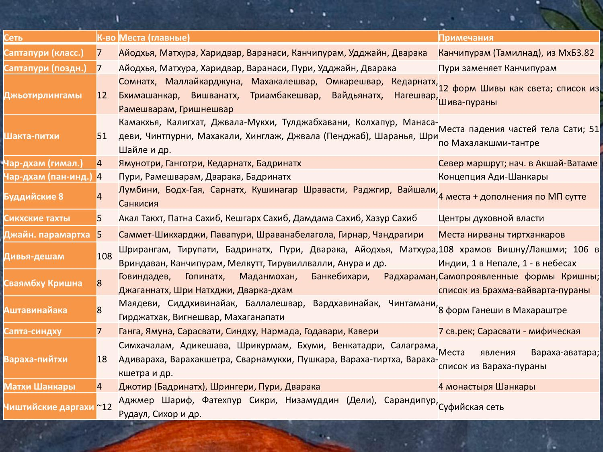
▶ Тем не менее, для Мадхавы это все-таки даршана, то есть она, во-первых, потому что она тяготеет к высшей цели освобождению, во-вторых там разные какие-то обоснования, доводы, то есть вполне себе рационально все представлено, кроме того там же есть так называемая лингвофилософия, школа Панини описывается среди прочего три шиваитских системы, включая кашмирский шиваизм, включая пашупату. Так что шиваитские школы, аж три там философских школы, видите? Это все говорит о том, что подсчитать количество философских школ в Индии не представляется возможным, потому что разные способы оценки критериев, что мы будем считать философией, что нет, каждый автор как-то по-своему это все воспринимает, хотя, наверное, вот можно сказать, что этот автор, он поставил рекорд, 16 школ никто не выделял. Дальше в виде философских текстов такие бывают. Ну понятно, что философская школа начинается с сутры, не всякая конечно, то есть как мы уже помним пассанги, это не так было, но так или иначе большинство именно сутры, где содержится очень краткое описание системы.
Жанры философских текстов YT/RT/AU
▶ Веданта сутры, например, брахман, в скобочках, есть то, из чего рождается этот мир, добавляется по смыслу, то есть такого рода кратенькие высказывания, такие анигматичные уже показывают, что без дополнительных пояснений тут не обойтись, то есть непонятно, что такое, из чего рождается этот, то есть понятно, как-то из контекста можно вывести, но тоже не до конца, то есть комментарии он вот эти неясные вещи как-то всё-таки раскрывает. Так что читать, допустим, только лишь базовые тексты в жанре и не обращаться к комментариям. Ну для исследователей философию это просто нонсенс, то есть это просто невозможно, потому что мы не можем зачастую понять контекст, в котором мыслил создатель базового текста. Много времени прошло и поэтому требуется усилие комментариев, а даже может быть ни одного третьего, чтобы все это как-то эксплецировать. Опять же вот 27 сутра, первой пады Тасйавачаках пранава, то есть вот тоже всего три слова.
Сутра и бхашья YT/RT/AU
▶ Его еще выражение, слово ум речь идет о вышваре, которого йога признает, а санкхьи не признает. Тоже ведь как видите очень краткое высказывание, для асутры характерны именно такие скорее именное формы, то есть там практически нет действий, каких-то нарративов, развёрнутых повествований, то есть чем более сжатый текст, который иногда выглядит просто как какой-то заголовок, как какой-то слоган, афоризм, не случайно, кстати, его сутра переводят как афоризм и все, то есть там не до красот санскритских в данном случае, а скорее вот до лаконичности санскрит, вам может и лаконичность тоже хорошо выразиться, поэтому тут конечно комментарии обязателен, Почти все дальше начинали с сутры, о чем я говорю, вот и поэтому комментарии самых разных типов, аш я, бранте, тика, виварана, там много всего они там те все сутры как-то по-своему описывают иногда сплошняком просто идет, каждое слово муссируется и толкуется, иногда как-то выборочно, но так или иначе комментарий обязательно опирается на какой-то базовый текст. Другие виды это карики, стихии, обычно это там они в традиции могут называться еще и шлоки в добавок всему хотя не всегда собственно это выдержан именно в слог ну Санкхья-карики допустим известный текст или Мандукья-карики Компедио сам раван, о чем я говорю. То есть это какая-то энциклопедическая работа, которая свидетельствует уже о значительном времени, прошедшем со времени начала этой области знаний, то есть прошло много веков и вот теперь последователи могут создать какой-то масштабный труд, справочное, с какое-то пособие, где содержится масса всяких сведений.
Карика, санграха, сара YT/RT/AU
▶ Ну а противоположностью в самом рахе является квинтэссенция или выжимка, называемая сара, которая, в отличие, правда, от сутры, все-таки обладает чуть большей развернутостью и ее как бы легче понимать из-за этого. Веданта-сара, пример, текст садхананды абхатийский или Парамартха-сара, текст общинного Будды. Дальше, философия обладает такой специализированностью, то есть в каждой школе есть своя какая-то фишка. Допустим, в самкхе это идея гун, идея тап, то есть там уклон идет на представление о том, как происходит этот мир, из чего он устроен, вот поэтому здесь тема гун и тап занимает большое место. Миманса это жертвоприношение, ньяя это разные познания, вайшешике это атомы преимущественно, методология, которая описывает самопогружение, психотехническую работу и так далее.
Специализация школ и культура дискуссий YT/RT/AU
▶ Это в своё время привело такого нашего оригинального философа, как Зильдерман, считать, что вся индийская философия она работала как какой-то единый организм, в котором было шесть частей, каждая часть вот что-то такое себе привносила. Ну я не думаю, что это именно так, но так или иначе какая-то специализированность была, безусловно, но это все-таки не однобокость какая-то, они же каждый из них представляют собой запущенную систему, которая позволяла своим адептам надеяться на хорошие результаты при продвижении к высшим каким-то стадиям, к высшим пределам бытия. Еще очень важно отметить это то, что индийская философия развивалась в обстановке дискуссий, индийская философия исключительно полемична, очень полемична, там все время можно встретить какие-то следы, полемики, там какие-то есть возражатели, там ответы на возражения, то есть как правило возражения это какие-то фантомные персонажи, от лица которых идет что-то такое противоречащее сказанному. По сути дела, мы здесь видим такое своеобразное предварение будущего принципов фальсификационизма, который был введен только в XX веке, то есть по сути дела авторы индийских философских сочинений они из-за методологических соображений временно ставят себя под вопрос, чтобы показать, что мы можем как бы справиться с этим возражением, ответить на него, на поэтому потому что это возражение остается без ответа, даже самое мелкое, и ответив на возражение там идет дальше.
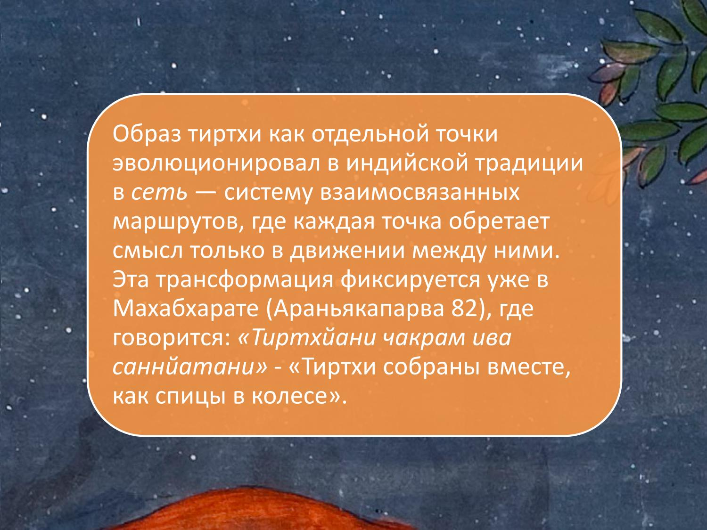
Вада: роль диспута в философии YT/RT/AU
▶ Поэтому можно согласиться, допустим, с отчасти с коллегой Шохиным о том, что низкая философия рождалась именно как собственно школы, которые друг с другом полемизировали, и в ходе этой полемики им же необходимо было как-то оттачивать свою аргументацию, опираться на какие-то доводы, соответственно, развивалась логика, развивалась риторика, развивались в целом их постулаты, и действительно это важно, потому что для индийского полемического пространства существенно, что победа в споре это как бы одежда на благополучную судьбу в дальнейшем. Те, кто не выдерживают спор, те, кто проигрывает, спорит, оказывают свою несостоятельность и в общем-то с ними уже меньше считаются, то есть от споров все зависит от полемики и не случайно многие школы просто они исчезают индийского философского пространства еще в глубокой древности, потому что они не прошли проверку на какую-то основательность, обоснованность. Поэтому здесь все это очень-очень важно. Конечно разные взгляды на мироздание существуют в индийских текстах философских, но если так обобщить как бы за некоторыми исключениями, то характерен такой онтологический пессимизм, имеется ввиду, что окружающий мир воспринимается как что-то не очень достойное, что-то такое низковатое по сравнению с каким-то иным миром, который находится, можно сказать, в ином измерении, и вот поэтому с этим пессимизмом коррелирует также с этим оптимизмом. Вот то есть здесь конечно у нас там не очень хорошо, но потом потом все будет зашибись, все будет замечательно, поэтому здесь сохраняется связь с религией, с психологией, жизненной практикой, с мифологией.
▶ Поэтому не можем сказать жестко, что Даршаны это точно философия, а больше ничего скорее, религиозная философская школа, потому что здесь моменты религиозные исключительно важные, ну конечно, за исключением локаяты, но там тоже кстати религия занимает немало мест, о чем еще говорится. При этом, несмотря на такую жесткую полемику, а может быть именно благодаря ей, вот это индийское философское пространство представляет собой очень интенсивный, насыщенный обмен разными идеями, разными примерами, какими-то метафорами, то есть они просто переходят из новых текстов в другой, как никаких ссылок нет, естественно. Допустим, примеры абсурдного высказывания вроде там сына бесплодной женщины. Это такой совершеннейший абсурд, который индийские философские традиции используют довольно часто. Или пример заблуждения это то, что человек в темной комнате видит немножко что-то такое свившееся кольцами, пугается, думает, что это змея, самом деле это всего лишь левка.
▶ То есть это вот опять же такой примерчик приводится для иллюстрации факта заблуждений человека. Кроме того, они оперируют примерно схожим кругом понятий, то есть такие как Манас, Атман, Брахман, Буддьи, Джаньяна там много всего и в каждой конкретной школе есть какие-то свои нюансы, которые по-своему высвечивают эти особенности, Так или иначе, это все показывает, что индийская философия это такое пространство, хотя и где там жесткая бурная критика, порой весьма много негативного с переходом на личности, такое тоже бывает, но тем не менее это ещё такое взаимное опыление, я бы сказал, взаимное обогащение. Они из этих полимических каких-то войн выходят сильнее и более развитыми, более сильными, что ли? Да, многие школы вышли, просто пропали, потому что они не выдержали эту проверку и не смогли, соответственно, отстоять свои постулаты, оказались несостоятельными, соответственно. Ну, немножко слов по поводу периодизации индийской философии.
Периодизация индийской философии YT/RT/AU
▶ Сейчас я выведу полностью и можно сказать, что она насчитывает семь таких периодов. Сначала предфилософия, которая начинается с эпохи Ригведа и заканчивается где-то шестым примерно веком, когда начинается, собственно, это еще такой период зарождения каких-то интуиции определенных, протофилософских, какие-то важные категории, вроде брахманы или атманы появляются здесь, представление о познании мира, мести человека в этом мире, пока еще очень сильно мифологизировано. Потом Шраманский период, от слова Шрамана, был такой контингент духовных бродяг, которые протестовали против Вед, против брахманизма, против жертвоприношений. Он длился где-то лет 200, был очень плодотворным, потому что из шраманского периода вышли, например, джанизм и буддизм, повлиял он также на другие правления, потом период ранних школ 4 века до новой эры, по второй век новой эры, ранняя сангхья, различные буддийские традиции, нюансы сюда же можно отнести, в принципе он тоже появился. Потом классический период, собственно самый пожалуй важный для нас, я буду именно на него оперировать, это формирование основных систем со второго по девятые века, то есть появляются веданта в таком классическом виде, миманса, йога, санкхьи и Ишваракришны.

▶ Веданта, причём в различных вариациях, не только у Шанкары, адвайта и вишишта-адвайта, всё-таки позже было, потом позднесхоластический период, когда вытесняется буддизм постепенно и школы переключаются на разборки друг с другом. В этот период мало что создается такого абсолютно нового оригинального, хотя несколько школ все-таки формируется, скорее уточнение, какая-то детализация полученных знаний и, в общем, такая философия, философская традиция входит в период своего такого полного устаканивания, не то чтобы полного завершения, но она, так сказать, уже отливается полностью в своих классических формах и в то же время это ещё и начало конца, потому что ну дальше уже наступает новую эпоху, мы с вами не будем рассматривать современную физику, времени хватит, но вот по крайней мере XVIII века начинаются какие-то новые веяния, с момента колонизации появляется новые философы вроде Рамуханарая, Виконанды, других каких-то деятелей, которые вроде как бы обращаются к прошлому, к прошлой мысли, но на совершенно других основаниях и смотрят в другом направлении. Ну и современный период 47 года это философия, которая очень во многом выстроена, но при этом там немалое место уделяется разработке каких-то историко-философских трудов. Что касается, есть ли сейчас, допустим, традиционная мысль в идее, это вопрос такой неоднозначный. Какие-то школы давно исчезли, как Миманс, например, там классическая обыток вообще практически никогда не существовал толком.
▶ Тексты по санкхье составлялись, как минимум, до конца семидесятых годов двадцатого века, Нияя в принципе тоже существует, хотя там уже сильно трансформировалось и вайшешике, судя по всему, вымерла, но веданта, веданта в основном сейчас представлена как религия определенная, вот так что в общем и целом традиционная мысль как-то несколько потускнела сейчас и хотя кое-где еще сохраняет свой характер. Дальше. Так, ну, здесь у меня диаметр остается. То есть я, когда говорил о индийской культуре, я упоминал вот эти восемь черт, которые её характеризуют и в принципе мы это можем показать на примере философии тоже, философия это часть индийской культуры, поэтому всё это на ней тоже отражается. Здесь мы тоже видим непрерывность развития, непрерывность развития с достаточно древних имен и в течение многих столетий идет вот эта передача каких-то знаний, вот преемственное исполнение учителей, что вполне логично, то есть сначала какой-то легендарный основатель, у которого были ученики, у этих учеников свои ученики, и это так вот идет, идет, идет, пока традиция в принципе живет и развивается.
Общие черты индийской философии YT/RT/AU
▶ Накопление, имеется в виду традиция накапливает философский материал, увеличивает свои так сказать философские мышцы, всего становится, положений становится все больше и больше. Инклюзивизм впитывает разные положения от других традиций, она ассимилирует их, усваивает. Идеализация прошлого, новое как старое, то есть опять же фенеральный комментарий, о чем я уже говорил. Все лучшее создано когда-то давно, и вот все вот эти замечательные углы, достойные, вроде Капилы, и прочих, они как бы вышли родом из Золотого века, они все прекрасно так устроили, а нам остается только лишь все это бережно сохранять, передавать и ни в коем случае не расплескать эту драгоценную воду, чтобы она питала и нас, наших потомков. Дальше не историчность то показывается в частности тем фактом, что для индийских философских систем совершенно без разницы, жива сейчас какая-то соперничающая с ними традиция или нет, допустим та же Локаяты, которая как-то тихо скромно скончалась ближе к концу первой тысячелетии новой эры, она никуда не исчезла из-за историко-философских трудов и не только оттуда, то есть к Лакайе эти постоянно обращаются в санкхьи, историка, ну конечно, философских историков исторических прудав, её как будто бы достают из этого старого сундука, бьют ее нещадно и опять в этот сундук убирают, то есть ее самой нету, но споры слагает и почему-то продолжаются.

Полемичность и взаимное обогащение школ YT/RT/AU
▶ То есть это очевидно их очень волнует индийских мыслителей, атадоксальных вот такая возмутительная школа, как такая, ну я потом ещё расскажу некоторые другие случаи, как работа не в прямом ущербе, а просто деятельность в таком ключе, что для индийских философских традиций совершенно неважно, ли сейчас их оппонент или уже в лохломе тот свет. Переплетение различных философских сторон, то есть в одном и том же тексте мы встречаем там и антологию, и теорию познания, и этику, и эстетику, и там аксиологию, какую-нибудь науку о ценностях и тут же при этом там миф какой-нибудь расскажут и как в джайнских текстах там опишут вашу диету, которую надо соблюдать, чтобы добраться до лучшего идеала или как Патанджеле вам расскажет, как мир устроен, про Гору Мэо, например, расскажут тоже, вот, то есть все это очень тесно переплетается, Отстроенность в школу, то есть мы не можем встретить, это уже как бы веяние современной философии, когда попадаются одиночки, ну вроде того Шея Робинда, очень известного мыслителя, который сам по себе, у которого нет учителей, по сути дела у щенков тоже, а в традиционной индийской мысли это всегда какая-то втягивание контекст школы, то есть это тоже тот случай, когда социум доминирует над индивидом, ты что-то собой представляешь только потому, что относишься вот к этой блестящей плеяде мыслителе, которая восходит к каким-то очень древним временам и если ты будешь этим всем пренебрегать, станешь просто изгоем, которого никто не будет слушать, как-то так.
▶ Ну и мы видим, конечно, такое многообразное, обширное целое с большим количеством текстов, персоналий, каких-то полемических диспутов, много всего в индийской традиции и это объединяется опять же единственной терминологией, единственной каких-то категорий, которые они используют, примеров, метафор, понятий, образов, это делает индийскую философскую традицию в целом каким-то действительно единым пространством, которое мы можем вполне себе отчетливо выделить, обозначить, как-то ограничить, отделить от других пространств. Так дальше индийская философия, то есть когда мы говорим об индийской философии, то прежде всего говорим о даршанах, ну или о школах дхармы вплоть до буддизма, то есть это профессиональные школы и собственно мы ими будем все время заниматься, но философия в Индии не просто философия, это не какие-то отвлеченные умственные, философия практична, философия методологична, поэтому философскими идеями с удовольствием пользовались различные круги, к философии не имевшие отношения, например. Есть едва ли не каждая область индийского знания она так или иначе могла включать в себя философские какие-то соображения, рассуждения. Допустим, индийская медицина, индийская политика, индийское военное дело, индийская эратология в конце концов, то есть что мы не возьмем, то везде хоть чуть-чуть, но там заметно влияние философии и обращение к философии, то есть философия это уважаемое занятие, это элитное занятие, и поэтому философ в Индии это человек, не какой-то чудак с улицы, который не знает, как ему жить на свете, а это мудрец, которому идут за помощью, за консультациями, который тебе подскажет, как надо существовать.

Три круга философствования YT/RT/AU
▶ Ну и третий момент это религиозные круги, философствование, это не профессиональная философия, здесь эти круги могут не знать санскрит, они могут, ну, у них зато, как правило, такой весьма крупный мистический опыт, и такие люди, всякие садху, всякие там какие-то святые, они, откликаясь на просьбы своих учеников, начинают, так сказать, тоже пускаться в какие-то философские беседы, которые могут опираться на философию, такую как профессиональную, могут и нет, но так или иначе тоже показывают, что философские рассуждения, даже если они в какой-то народной форме выдержаны, какой-то простецкой, они так или иначе цепляют индийцев, они очень им важны, потому что они в конце концов обосновывают их деятельность, наделяют смыслом эту деятельность, это для них очень-очень важно. Ну, собственно, я уже приближаюсь к завершению. Сейчас вставлю время, конечно, на вопросы. И вот к последнему с тем, это в чем разница, в чем сходство между западной и восточной философией. Под западной, конечно, мы будем подразумевать греческую традицию, древнегреческую философию, под восточный естествоиндийскую.
Индийская и греческая философия: сравнение YT/RT/AU
▶ Это уместно сделать, потому что философия, что в Греции, что в Индии появляется примерно в одно и то же время, но как бы начинает развиваться все-таки по-разному и разная ориентация. Но если мы говорим о таком греческой традиции, то философия начинается с размежевания, с мифологией, религии, когда там Анаксимандер заявляет, что Солнце это просто раскаленный камень, Сократ сомневается в существовании олимпийских богов и своих собственных каких-то богов, типа Даймона, начинает выдвигать, ну и другие всякие нарушители общественного спокойствия выдвигаются, то есть философия она рождалась в каких-то борениях, драме, слезах и с большим трудом находила себе дорогу, потому что общество не особо было заинтересовано в философии, но время пришло и поэтому все равно она появилась. Дальше большое значение начинает занимать математика, в частности у Пифагора, у Платона, который навычу, занимается математикой, естествознание, тоже Аристотеля. У философов, особенно в, допустим, платонической школе, ну не только, не только у него, это распространённая такая практика, происходит такое отвлечение от телесности, уход в абстракции, идеал чистого интеллекта, Логоса, греческая мысль подарила миру Логос, это такое очень крупное достижение, потому что фактически я, наверное, скажу какой-то провокационный тезис, но Логосом вообще поделяется все, и даже вот то, что мы здесь с вами сидим в этом замечательном виртуальном пространстве благодаря организации товарища Макса Юрьевича и вообще в целом это и мой курс и любые другие курсы вообще в принципе научная деятельность всего мира, философская деятельность это только благодаря тому, что был создан в области.

Греческая традиция: Логос, математика, внешний мир YT/RT/AU
▶ То есть это особый концептуальный взгляд на вещи, на мир, на такой очень абстрактный, рациональный, логичный, формально логичный, это породило, конечно, другие проблемы, но вот посмотрите на окружающий нас наш мир это фактически следствие такого изобретения Логса, потому что мы живем в результате применения научных технологий, которые опираются на ЛОЛОС, это вот было связано с каким-то очень большим усилием вниманием к интеллектуальной деятельности, к чистой интеллектуальной деятельности, которая во многих случаях отождествляется с духовной деятельностью. В Древней Греции там практически не было разницы. Истина, к которой они стремятся, они, собственно, сама по себе созерцание истины в виде каких-то идей или ещё как-нибудь это идеал, к которому нужно, собственно, стремиться, больше этого ничего нет. При этом, несмотря на вроде как отвлечение от телесности, все-таки сохраняется интерес к внешнему миру, по крайней мере у Аристотеля, это позволяет развивать какую-то уже научную деятельность, последствия там физика, метеорология, психология и другие дисциплины. Это вот понятно, что сейчас нет возможности это все разворачивать слишком подробно, но при всех различиях греческой мысли, конечно же, там масса каких-то отдельных нюансов, мы можем какие-то общие элементы выделить.
Различия: цель, дух vs. интеллект, отношение к телу YT/RT/AU
▶ Если всё это, допустим, сравнивать с индийской философской традицией, то Индия настойчивее, гораздо настойчивее, чем греки, подчёркивает важность тем освобождения от страданий, тем чтобы философия помогла бы человеку полностью освободиться, спастись. Вот, то есть философия она исключительно инструментально, прагматична. В греческой философии философией можно заниматься всю жизнь, это занятие, как профессия, ли, за это можно деньги получать, как это делали софисты в своё время. Вот поэтому здесь другой, конечно, подход. Истина цена как средство, то есть человек достигает какую-то истину с помощью философии, а потом с помощью её освобождается, то есть истина не сама по себе ценна, а в том ключе, в котором можно обрести лучший идеал.
▶ Дальше уход здесь осуществляется не в интеллект, а скорее в дух, духовную составляющую, то есть индийские философии уже с древним временем умели отделять духовное и интеллектуальное, а интеллектуальные тоже могли дробить на низшую интеллектуальную деятельность из Манса и более высокую из Буддхи, этого тоже будет касаться последствий. Вот поэтому для них, конечно, главным занятием является освободить дух, но при этом надо отточить интеллект для того, чтобы помочь духу вырваться из этого плена, в котором он находится, из этой сансары и дать ему возможность обрести мокшу или нирвану. С религией индийская традиция не размеждовывается, как я уже говорил, здесь все очень тесно связано, практически все индийские философии, за исключением локаяту и признают существование трансцендентной реальности, к которой следует стремиться, они могут ее по-разному называть либо нирваной, либо мокшей, либо брахманом, либо кришной, но то, что это для них бесспорный факт, подтверждается их авторитетными учителями, их мистическим опытом, их многочисленными текстами. Вот, ну и в то время как греческая мысль она пытливо озиралась по сторонам, она интересовалась внешним миром индийцы, это кстати очень коррелировало с тем, что греки заядлые путешественники, мореходы, там куда-то там отправлялись торговать, странствовать, строить колонии какие-то повсюду, Индийцы они не заядлые путешественники, они скорее по домам сидят и просто размышляют, и созерцают, поэтому для них не характерен интерес к внешнему миру, именно по этой причине науки в таком нашем западном смысле слова они там в общем-то не были сильно развиты, даже физика, например, или биология, скорее интерес к внутреннему вот это да, здесь индийцы на порядок опережают любые другие народы, то есть столько терминов для обозначения тонких психических процессов, работы сознания, столько в общем-то не было, было бы тоно в западной мысли и вот это вот выделение разных каких-то телесных оболочек как минимум пять уже выделяют у Панишады, в тетерии Панишаде пять оболочек, которые за которыми скрывается дух или там метафора колесницы вспомните в Катху Панишаде, где тоже вот такой психотелесный состав, он описан во всех деталях, там множество разных нюансов, то есть по сравнению с такой вот картографией человеческой души или сознания, то, что делается, делалось на западе, ну это достаточно просто, гораздо проще, там ограничивается дуадой душа-тело, ну либо как вариант дух-душа-тело триадой, а вот понимание тонкого тела, например, и какого-то тончайшего тела это в западной традиции так это не сломалось.
▶ Пока не появились какие-то эзотерические учения. Ну понятно, что я сейчас вот некоторые различия отметил, но есть и какие-то сходства, безусловно, почему мы то и то можем считать философией. Собственно, и там, и там мы встречаем какие-то рассуждения, касающиеся предельных оснований бытия. Что такое, как он произошел, как появился человек, что собой представляет в принципе человек, к чему ему надо стремиться, какова его цель. Причем хотя индийская мысль она в полной мере с мифологией не порвала, тем не менее рациональность там, разумеется, присутствует, доводы какие-то, логика определённая и вот в этой рациональности Индия тоже схожа с западной философией.
Сходства: рациональность и образ жизни YT/RT/AU
▶ Кроме того, философия там и там она пытается по-своему как-то улучшить жизнь, улучшить мир вокруг себя, либо в большей степени может внешний мир, хотя вот для греков тоже был характерен идеал философии как жизнеустройство, но это скорее на излете греческой философии. Для индийской главное это улучшение жизни самого себя. Да, я забыл бы там отметить раньше, что образ жизни не менее важен, чем смысл. Философ это человек, который не просто болтает, а тот, который живет в соответствии с тем, что он говорит и как он думает. Его образ жизни непосредственно связан с его образом мысли, поэтому это не какой-то, допустим, философа Фалеса, который как-то задумался, глядя на небо, и свалился в яму, то есть незаметно, что у него под ногами находится, и был за это жестоко высмеян.
▶ Ну это совершенно не характерная ситуация для индийской традиции, там философы они крепко сидят в позе лотоса, условно говоря, то есть они крепко на земле находятся, они не будут падать в ям, они пользуются очень большим уважением, я уже неоднократно говорю, потому что действуют так, как они учат, если они не будут так действовать, то грошятся на такой философии, от них прежде всего их собственные ученики откажутся. Бывает так, что какая-то философская школа проигрывала в диспуте и все ученики проигравшего вместе с ним самим отправлялись в ученики победителя, ну который вот тем самым доказывал, что его в смысле он гораздо более важен, более продуктивен, чем у проигравшего. Так что вот применительно к последнему пункту попытки улучшения жизни это прежде всего улучшение внутренней жизни, достижение какой-то мудрости, которая будет отныне до конца дней этого человека его сопровождать. Так, что там дальше? А, ну собственно, всё, да, здесь всё, пожалуй, оставлю точку дальше у нас уже будет тема связанная с протофилософией тоже следующая тема следующий раз а здесь я прервусь и могу ответить на ваши вопросы
▶ Это вопрос Максима.
Вопросы слушателей YT/RT/AU
О трёх видах страдания и школе санкхья YT/RT/AU
▶ Да, сейчас я включу тут. Максим спрашивает: В представлении какой школы относятся три озвученных вида страданий, когда они примерно сформировались? Ну это прежде всего философия санкхьи, они встречаются в начале санкхьи карик, санкхьи карик и Ишваракришны, где вот выражены ещё они встречаются йоги такие, что такая триада, вот да, непременно сформировались, сложно сказать, но где-то на рубеже старой новой эры, вероятно. А, ну, собственно, это, пожалуй, единственный вопрос, который я вижу, дальше просто реплики, дзен-буддийский намек от Татьяны Федорович и большая просьба в конце занятия сообщает тему следующей лекции, чтобы почитать. Следующая тема будет связана с протофилософией индийской, а именно мы будем говорить про Веды, про, если хватит время, то и про Бхагавадгиту тоже.
▶ Что-нибудь есть, что можно почитать на русском, настраиваясь на волну следующего
▶ занятия? Ну, будем считать, к примеру, то есть взять перевод Циркина, в том числе, который это вы издавали, да.
▶ Это как бы задача на неделю, конечно, плотная такая.
▶ Ну, раз спросили, вот, или там, если почитать, то там можно посмотреть на литературы Эрманна, неплохо там изложен, или какие-то комментарии к к эвинистским гимнам.
▶ Есть книга Избранные гимны и то есть помимо, помимо полного перевода Ригведы и Атхарваведы есть отдельная книга Избранные, избранные гимны Ригведы и отдельная книга Избранные гимны Атхарваведы. Так
▶ что за неделю, если кто-то будет это всё одолевать, это на памятник поставить. Я не говорю про Бхагавадгиту.
▶ Гиту вполне возможно как раз. Есть ли у нас какой-то устный вопрос?
▶ Да, коллеги.
О территориальных притязаниях современной Индии YT/RT/AU
▶ Да, пожалуйста, если возможно. Представьтесь, пожалуйста. Михаил. Да, коллеги, по самому началу лекции, когда мы немножко коснулись географии, так как она осмысляется в несколько более раннем периоде, Значит, я в Индии сталкивался с тем, что они очень любят приписывать себе географически такие именно древние Бхарата-варши, такие области, Ямна, потом на кусок Таиланда, опять же, Камбоджа тоже большой вопрос вызывает. Потом себя они очень любят еще туда, в Афганистан, вплоть до части Таджикистана размножать.
▶ Вот насколько оправдано их восприятие, либо же это, ну, как бы, влажные мечты о том, как хотелось бы, чтобы оно было? Вот что об этом говорит
▶ Это в большей степени, конечно, выдача желаемого за действительное, потому что они путают влияние индийской культуры на те регионы, что вы назвали в прошлом, с какими-то, может быть, реальными захватами территориальными в прошлом. Опять же, был такой в двадцатом веке очень интересный современный мыслитель, националист Мадхав Садошив Голлкар, один из представителей индуистского коммунизма, хиндутун. Своеобразное такое учение, которое описывает именно националистические всевозможные представления. У него очень интересная философия, надо сказать, и довольно обоснованная. Так вот как бы в своих трудах есть такая работа Пучок мыслей Банчо Фот, в этом пучке он описывает как раз, что эдийцы они там на самом деле были и в Сингапуре, и в Малайзии, и Центральной Азии, всё Индийская земля, это всё вот это вот другой правда термин использует, но как бы близкий к тому, то есть всё вот это индийская территория, как бы наша, да, то есть он там не говорит, что мы должны это срочно захватить и прочее, но как бы такую мысль в социум он впрыскивает, а эти идеи сейчас судя по всему заразительны, потому что уже достаточно долго власти, уже 12 лет находится Джаната Бхарта Партии, то есть вот националистическая партия, возглавляемая Наре Андре Моде, премьер-министром Индии, который как раз вот и ратует за возвращение корням, к этим всем к истокам, что хорошо как бы для традиций, но при этом это стимулирует в том числе рост националистических настроений, видимо вы стали свидетелем где-то такого рода вещей, есть конечно и оппозиционные мнения, есть много всяких либералов, есть люди заточенные на запад, их тоже немало, но это сейчас не мейнстрим, это скорее маргиналия для индийцев.
▶ Ответил на Ваш вопрос?
▶ Да, спасибо, конечно.
▶ Так, Максим, правильно ли я понимаю, что часть этих притязаний верна? Панчал это же Афганистан? Ну как сказать, нет, это не Афганистан, конечно, там где были куры и панчовы, это скорее ближе к Кашмиру куда-то, там к Гималаям, наверное, не Афганистан, конечно, но тем не менее в Афганистане, по крайней мере, когда-то, допустим, империя Кушан была такая, куда входили иорганские какие-то земли, в Афганистане была масса монастырей буддийских в свое время тоже, ведь Афганистан это не что иное, как древнее Гандхара. Гандхара перекрыл эту культуру, которая, собственно, получала с Запада очень много каких-то прививок с востока, и для них это, конечно, очень-очень важно было. Но да, с Афганистаном еще можно как-то с ним, наверное, согласиться, но уж никак не Яма, Тамбуджа, это тот же перебор.
▶ Ну что, я полагаю, что наше время исчерпано, первое занятие состоялось, 15 впереди.
▶ Да, будем действовать дальше.
▶ Спасибо!
▶ Спасибо вам, коллеги! До
▶ Всего доброго!